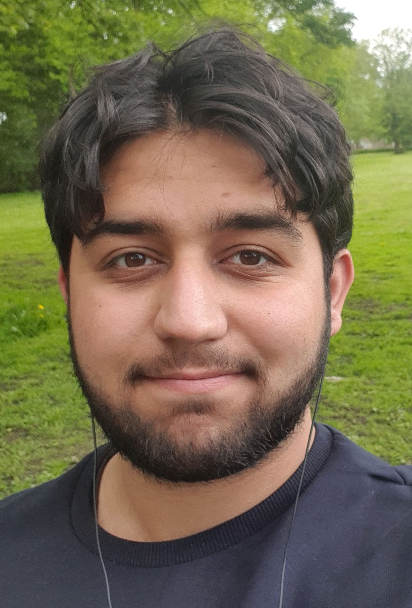
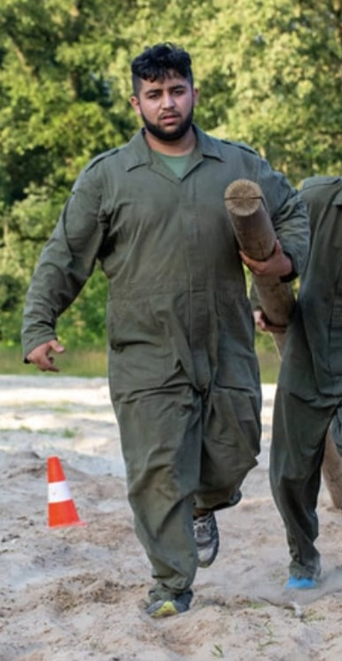

Mehmet Recep Ak
Age:
20
Birthday:
6/10/2000
Occupation:
Student (ICT:SE)
Status:
Alive
Birthplace
Amsterdam, NL
Student Number:
500815421
Class:
IS_109
"Ultimate Frisbee!" - Catchphrase
Mehmet Recep Ak is a former student at CMD and a current student at ICT:SE. He lives in Amsterdam New West with his mother, little brother and cat. Known by family and friends alike to be social, friendly and awesome, he swears he hasn't paid his friends to say those things about him.
Being born and raised in Amsterdam, Mehmet has little interest in turkey, rarely visiting there and feeling more at home in The Netherlands.
Mehmet is a tall young man (Average by dutch standards) of large build, evident of his physical strength. He has dark brown hair usually swept to the right, but he likes playing with it causing his hairstyle to vary immensely from time to time. He has brown eyes. Mehmet also has a beard at all times, refusing to shave it out of fear of looking like a child, his beard length may vary however.
Mehmet is best described as a friendly giant. Kind, social, helping and proactive are personality traits he possesses. Having lost his teen years to mental health issues, he now sets out to make up on the time he lost by working hard and improving himself immensely, which attributes to his apparent motivation.
Mehmet cares deeply for his friends and family, and does anything within his power to help them when he sees them in need.
Mehmet's hobbies are gaming, reading, drawing and doing fitness. Furthermore, he enjoys spending time with friends and socializing.
Some things Mehmet loves to talk about are: Anime, Bo Burnham, music, D&D, Persona, Pokemon, manga, comics, drawing, comedy, himself and you.
20
6/10/2000
Student (ICT:SE)
Alive
Amsterdam, NL
500815421
IS_109